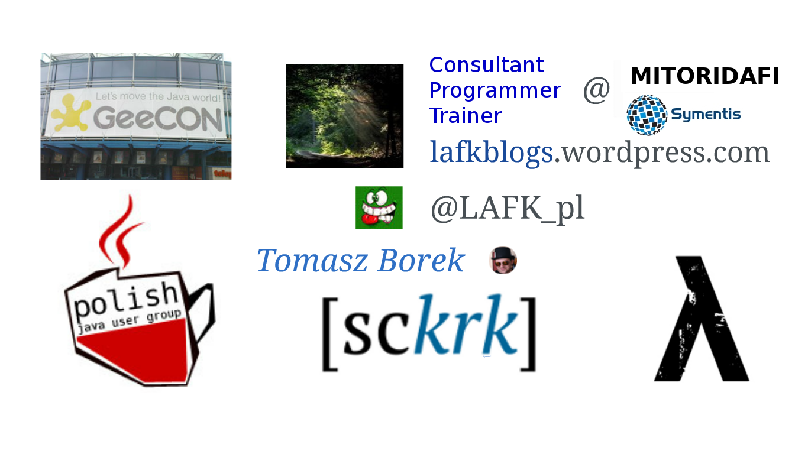
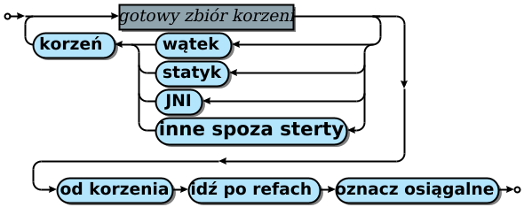

-Xmx<size> ‑XX:+UseParNewGC
‑XX:+UseCMSInitiatingOccupancyOnly ‑XX:CMSInitiatingOccupancyFraction=70
-XX:+CMSIncrementalMode -XX:CMSBootstrapOccupancy=10
‑XX:+ExplicitGCInvokesConcurrentAndUnloadsClasses ‑XX:+ExplicitGCInvokesConcurrent -XX:+CMSClassUnloadingEnabled
‑XX:+CMSConcurrentMTEnabled ‑XX:ConcGCThreads=<n> ‑XX:ParallelGCThreads=<n>
-XX:CMSTriggerRatio=70 -XX:CMSTriggerPermRatio=90 -XX:CMSWaitDuration=2000
-XX:+CMSParallelRemarkEnabled -XX:+CMSParallelSurvivorRemarkEnabled -XX:+CMSScavengeBeforeRemark
-XX:+CMSScheduleRemarkEdenSizeThreshold -XX:CMSScheduleRemarkEdenPenetration=20
-XX:CMSScheduleRemarkSamplingRatio=4 -XX:CMSRemarkVerifyVariant=1Odśmiecanie pamięci, Jawa 9 - 14
Żegnamy CMS, domyślny jest G1, dochodzą Epsilon, Shenandoah i ZGC. Który (i kiedy) wybrać?
Start
CO WYBRAĆ?! JAK ŻYĆ?! (to zależy oczywiście)
CMS i trzymamy się wersji gdzie on jeszcze jest?
G1 bo wystarczy albo nawet lepiej pasuje?
Shenandoah, Red Hat potrafi?
Epsilon - śmieciarz co nie odśmieca
ZGC - wiele TB sterty, bezwzględnie niskopauzowy?
Agenda
o mnie
odśmiecanie pamięci w 3 slajdach
CMS, G1GC
Epsilon, Shenandoah, ZGC
podsumowanie
O mnie

Ja w sieci

Zlecenia
audyty kodu, infrastruktury, komponentów, systemu
testy i audyty wydajności czy bezpieczeństwa
wchodzę w bazy danych, GNU/Linuxy, sieci czy bezpiekę
programy na zlecenie
prelekcje, wykłady tematyczne, warsztaty, szkolenia
Dziś z ramienia EPAM
 |
|
Odśmiecanie w 3 slajdach
Znakomita większość obiektów umiera młodo.
— hipoteza pokoleniowa
Figure 1. Organizacja pamięci (uproszczona)
Osiągalność

Figure 2. A co jak wątki aplikacji wtedy hasają?
Wnioski
każda zbiórka:
pauzuje (stopuje świat, zatrzymuje wątki apki)
czyści Eden
i przerzuca pomiędzy ocaleńcami (o2 i o1)
promocja to przerzutka z młodego do starego
przedwczesna jak brak miejsca w ocaleńcach
rozmiar sterty, ilość żywych ⇒ długość zbiórki (pauzy)
Źródła
Książka o automatycznym zarządzaniu pamięci, tzw. GC Handbook, Jones, Hosking, Moss
publikacje Warburtona, Ragozina, Bordeta, Shipileva
Pytania?

CMS (do 14)
Concurrent Mark-Sweep - czyli bez Compact
| współbieżnie z wątkami apki, reaktywność |
| ConcurrentModeFailure bywa zabójczy |
By użyć:
‑XX:+UseConcMarkSweepGCBy stroić: hmmm, momencik, parsuję… 20 flag
By stroić:
Jawa 14 pożegnała CMS, algorytm który wciąż potrafił i osiągał, ale którego utrzymanie było conajmniej problematycznie.
Technikalia
ConcurentModeFailure - szeregowo po starym pokoleniu po fragmentacji pamięci
dobre dla okienkowców (np. Intellij używa) - nie zamarznie interfejs
dużo pokręteł! wyładowuje klasy, współbieżny z apką, na stare pokolenie, istotne jaki partner w młodym pokoleniu,
System.gc()…
Pytania?
G1GC (8)
Wpierw śmieci, czyli Garbage 1(st)
| regionalizacja sterty - redefiniuje i uwspółbieżnia pokoleniowość |
By użyć: nic (domyślny) lub
-XX:+UseG1GCBy stroić: rozmiar sterty, ilość i rozmiar regionów (12 flag)
Jak to działa?
dobierasz ile regionów (2048-) i o jakim rozmiarze (1-32MB)
alokacja jest w Edenie i obszarach dla olbrzymów
G1 prowadzi buchalterię per region
pokolenia są rozbite a nie ciągłe
Regionalizacja
|
|

Ergonomia - wolne regiony
|
|
Koniec przedwczesnej promocji
|
|
Technikalia
zastępca CMSa, domyślny algo od Jawy 9,
wypuszczony w 2006, dojrzały teraz
regionalizacja sterty
dużo ciekawych zmian i usprawnień doprowadzających go do poziomu wyrafinowania poprzedników
optymalizacje na jakie G1 może sobie pozwolić
Źródła
odpowiednie JEPy
Pytania?
Epsilon GC (11)
ε w językach formalnych w informatyce oznacza pusty napis (
"")
| Na wszystkie sytuacje, kiedy marzy Ci się algo co… NIC NIE ROBI (JDK11+) |
By użyć:
-XX:+UseEpsilonGC -XX:+UnlockExperimentalVMOptionsBy stroić: …
Technikalia
Śmieciarz ma heurystyki startu, prowadzi buchalterię, znajduje korzenie, chodzi po grafie obiektów, pauzuje świat, zlicza referencje, uważa na cykle, odpowiada za alokację i - nomen omen - odśmiecanie pamięci, robi analizę osiągalności, używa barier…
Epsilon dba o alokację. Reklamacja pamięci? To nie jego broszka.
Po co?
testy wydajnościowe bez śmieciarza
testy kiedy apka zeżre pamięć
testy interfejsu odśmiecania
robienie własnego śmieciarza [1]
start, szybka lecz ostra praca, koniec
nauka
Źródła
Własny śmieciarz
Pytania?
Shenandoah (od 12, +8 +11)
od 12 → 8 i 11
O Shenandoah, jej imię było…
| Nie OracleJDK. |
By użyć:
-XX:+UseShenandoahGC -XX:+UnlockExperimentalVMOptionsBy stroić: jest rekomendowana konfiguracja
Rekomendowana konfiguracja:
-XX:+AlwaysPreTouc -Xmx<X> -Xms<X>
-XX:+UseLargePages
-XX:+UseNUMA -XX:-UseBiasedLocking -XX:+DisableExplicitGCRegiony inaczej

Figure 3. Za: Wiki projektu
Technikalia
współbieżnie ewakuuje obiekty
współbieżnie aktualizuje referencje do obiektów
sterty róznych rozmiarów mają podobne pauzy
współbieżny i równoległy
pauzy podyktowane są głównie rozmiarem zbioru korzeni
Źródła
Pytania?
ZGC (11, 15)
Zee or Zed, both pronounciation are fine. Z stands for 'the'… not.
By użyć:
-XX:+UseZGC -XX:+UnlockExperimentalVMOptionsBy stroić:
-Xmx<size> -XX:ConcGCThreads=<nr>
| ile wątków? heurystyka nieźle daje radę |
Po co nam ZGC?
wielo-TB sterty
max pauza: 10ms
współbieżny z apką, jak CMS
utrata przepustowości apki: max 15%
| Czas pauzy nie rośnie kiedy rośnie sterta lub ilość osiągalnych obiektów |
Czas pauzy

Figure 4. za: Per Lid, Stefan Karlsson
Technikalia
współbieżnie wyładowuje klasy - BEZ PAUZY
zwraca nieużywaną pamięć
sterta od 8MB do 16TB
współbieżny i równoległy
bariery odczytu (load barriers)
kolorowanie wskaźników
uwzględnia NUMA
współbieżne procesowanie finalizacji
Źródła
Pytania?
Podsumowując!
CMS: do 14, okienkowce i reaktywność, dużo strojenia
G1: 8, 9 domyślny, regionalizacja sterty, dojrzały
eksperymentalne:
Epsilon: od 11, tylko alokuje i nic więcej
Shenandoah: od 12, nie Oracle JDK, niskie pauzy
ZGC od 11 do 14, bezwzględnie niskie pauzy, TB sterty
ZGC: od 15 (GA w tym tygodniu!)
Dziękuję Państwu
Tomasz Borek @LAFK_pl
Zwiastun: bezpieczna Jawa